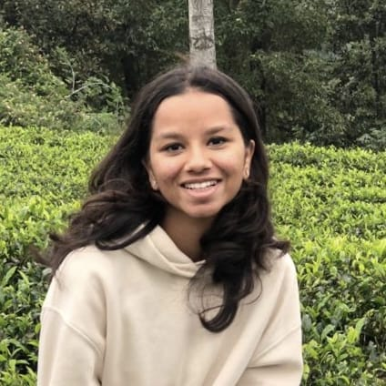

H Vybhavi Naveen

Summary
A highly motivated and innovative Electronics and Communication Engineering (ECE) student at SRM University with hands-on experience in web development, IoT and automation.Passionate about applying analytical and technical skills to build scalable software solutions and drive innovation in real-world applications.
Education
Bachelor of Technology in Electronics and Communication Engineering
SRM University,Chennai,India
Expected Graduation: 2026
Internship Experience
Intern – Eibenstock Positron Elektrowerk Pvt Ltd
Maharashtra,Tardal
08/06/2023 – 28/06/2023
- Gained hands-on experience in practical electronics and automation technologies.
- Assisted in troubleshooting and assembling electrical components for industrial applications.
Intern – SVL Automations
Kolhapur, India
3 June 2024 – 15 July 2024
- Designed and implemented IoT-based automation solutions using ESP32 and Arduino IDE.
- Integrated sensors for real-time control and monitoring.
- Design and implement POC in Iot with Cloud
Skills
Programming & Software Development
- Proficient in Python, C, and SQL.
- Hands-on experience with IoT platforms (Blynk, MQTT) and real-time systems
Technical Tools
- Expertise in Arduino IDE, ESP32, and sensor-based systems integration.
- Experience with real-time monitoring, debugging, and performance optimization.
Soft Skills
- Strong problem-solving, teamwork, and leadership capabilities.
- Effective communication and project management skills.
Achievements and Projects
- Plant Watering System
Developed a plant monitoring and watering system using ESP32, soil moisture sensors, and real-time data logging.
Integrated the system with the Blynk app for remote control and notifications.
- Member of placfv's Club(R&D)
- Blind Spot Detection System for Vehicles
Built an advanced driver-assistance system with ESP32-CAM for 360° surveillance, fog detection, and real-time snapshots with timestamps.
Used haptic feedback and timestamped event logging for enhanced safety and accountability.
- Community Service in Aadhar Foundation(NGO) from 10.06.2024 to 10.07.2024
- 100 days of code in Python course from udemy
- Web Development Bootcamp from udemy
- AIML online internship from AICTE
Other
Extra Curricular
Contact me